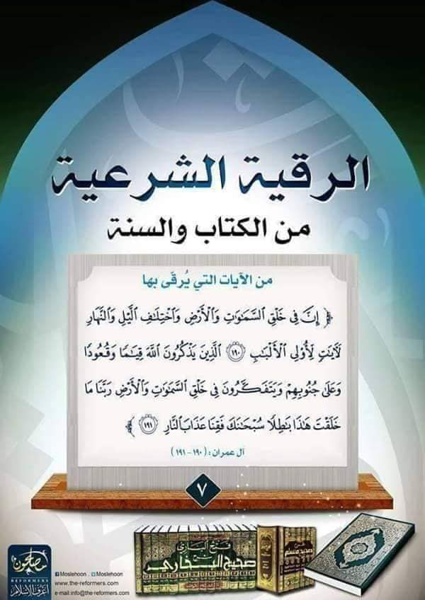

اكتب هنا النص أو الكلام الذي تريده أن يظهر بجانب الصورة مباشرة
جلسات متكاملة ومجربة من الكتاب والسنة لإبطال السحر، تنظيف الهالة والتخلص التام من العكوسات والمس والعين وتحصين شامل ومستمر ببركة وتوفيق من الله سبحانه.
🟢 احجزي الخدمة عبر واتساب الآن
تعليقات وآراء العملاء (10) 🌟
الحمد لله الذي بنعمته تتم الصالحات، عانيت لسنوات من ضيق شديد وعكوسات في الرزق، وبعد الجلسات والالتزام بالرقية تيسرت الأمور وانشرح صدري تماماً.
ما شاء الله تبارك الله، أمانة ومصداقية تامة ومتابعة مستمرة. بنتي كانت تعاني من كوابيس وخوف والآن تنام براحة تامة وهدوء وبدون أي قلق.
شغل يبيض الوجه وراحة نفسية غريبة شعرت بها من أول جلسة رقية، اختفت آلام الظهر والخمول وصار جسمي خفيف ونشيط.
جزاكم الله خير الجزاء، تم إبطال السحر وفك العقد والتعطيل اللي كان مأثر على وظيفتي وحياتي، انصح بالتعامل دون أي تردد.
كل الشكر لكم على هذا الجهد المبارك، رقية شرعية صافية وصحيحة 100%، رجعت الابتسامة والراحة لبيتنا بعد فترة طويلة من النزاعات.
التحصين قوي جداً وملموس والحمد لله، انقطعت كل الأعراض السيئة والتعب التلقائي اللي كان يلازمني، بارك الله في علمكم وعملكم.
فعالية سريعة جداً وراحة بال لا تقدر بثمن، فك التعطيل ظهرت أثاره فوراً على تجارتي وحياتي الشخصية، شكراً من القلب.
علاج حقيقي مبني على أسس شريفة وصادقة، تخلصت من العين والحسد القوي اللي كان مسبب لي تعطيل في كل خطوة، والآن أموري طيبة.
تغيرت حياتي للأفضل بشكل كامل والحمد لله رب العالمين، زال الثقل والضيق النفسي تماماً وأصبحت مقبلة على الحياة بتفاؤل.
شهادة حق أسأل عنها أمام الله، مصداقية نادرة وعلاج نافع، جزاكم الله عني وعن عائلتي كل خير وبارك الله في جهودكم المباركة.